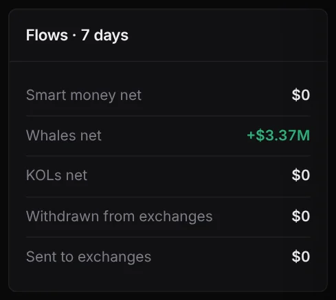
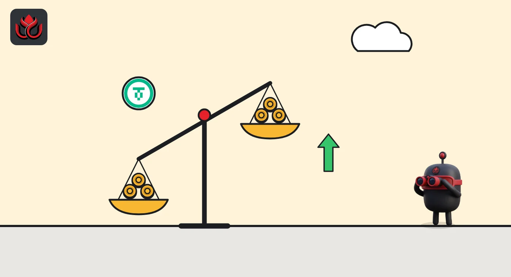

Two sharks bought $3.74 million of USD₮0 on Unichain in a day and sold just $75,000
A day after sharks were net sellers of the dollar token on Unichain, two wallets flipped to heavy buying. One of them also bought $4 million on Optimism.
Key points
- In the 24 hours to 6:34 a.m. ET on November 6, 2026, two shark wallets bought $3.74 million of USD₮0 on Unichain and sold $75,308, DeepSea's live feed shows.
- One wallet, ending 611f, bought $2.45 million in just 2 trades. The same address bought $4.02 million and sold $690,760 on Optimism.
- A day earlier the picture was reversed: sharks had sold $214,238 of USD₮0 on Unichain and bought $74,368.
 What DeepSea's data shows
What DeepSea's data shows
DeepSea's live feed totals trades by wallets it tags as sharks (large, active traders). At 6:34 a.m. ET on November 6, 2026, USD₮0 on Unichain was second on its 24-hour buying list: $3,743,662 bought and only $75,308 sold, by 2 wallets in 16 trades.
DeepSea's wallet list splits it in two. The wallet ending 611f bought $2,450,401 in 2 trades and sold nothing. Those buys were already in DeepSea's 12:34 a.m. ET reading, so they happened before then. The wallet ending dc32 bought $1,293,261 and sold $75,308 in 14 trades, including a $40,589 sale in the last hour. DeepSea gives no name for either.
DeepSea's token page for USD₮0 on Unichain showed a 7-day whale net flow of +$3.37 million.

Data: DeepSea (desea.io), checked November 6, 2026, 6:43 a.m. ET.
The token behind the flow
Tether's USDT has a cross-chain form called USD₮0, made so the same dollar token can travel from one network to another. CoinGecko describes it as keeping 1:1 backing with USDT and lists it in more than 20 network ecosystems, Unichain among them. At 6:44 a.m. ET it showed USDT0 at $0.9988 with a total value of $3.30 billion across all chains.
Because it is meant to stay at $1, buying USD₮0 usually means moving into dollars, or bringing dollars onto a chain, rather than betting on its price.
One wallet, two chains
The 611f address was busy elsewhere too. DeepSea's 24-hour list shows it bought $4,016,823 and sold $690,760 on Optimism in 8 trades. On DeepSea's realized profit table, which counts only closed trades, the wallet's Optimism result is +$17,682 over seven days, from 5 closed trades, 3 of them winners.
A day earlier, at 6:36 a.m. ET on November 5, USD₮0 on Unichain sat on DeepSea's selling list instead, with $214,238 sold and $74,368 bought by 2 wallets. In 24 hours the net flow swung by about $3.8 million toward buying.
USD₮0 on Unichain, shark trades over 24 hours
US$ million
Source: DeepSea live feed

Why it matters
The buying came after a hard day for crypto prices. CoinGecko showed bitcoin at $76,097 at 6:44 a.m. ET, down 5.2% in 24 hours, and ether at $2,242.86, down 7.2%. The two wallets added dollar tokens during that drop.
This piece uses data from DeepSea and CoinGecko. The feed does not show what the wallets paid with or why they bought.
LC Insight analysis
This section is our reading of the facts above, not a statement of fact.
- We think the swing from net selling to $3.67 million of net buying in a day shows these two wallets moving into dollars on Unichain.
- The 611f wallet bought on two chains at once. That looks like one owner spreading dollars across networks rather than a chain-specific bet, though the data cannot prove intent.
- Two wallets made all of this flow. The total says more about them than about Unichain users in general.
What's next
- Whether the 611f wallet moves its USD₮0 into other tokens
- The 7-day whale flow on DeepSea's Unichain USD₮0 page
- More selling by the dc32 wallet after its last-hour sale
Disclaimer. This article is based on public information and the sources listed below as of the update time shown. It is for information only and is not investment, legal or tax advice. Figures may change as companies and authorities publish new data.
Sources
- DeepSea live feed, 1-hour and 24-hour shark aggregates (fetched November 6, 2026, 6:34 a.m. ET; earlier readings November 6, 12:34 a.m. ET, and November 5, 6:36 a.m. ET)
- DeepSea, USD₮0 (Unichain) token page: 7-day flows (checked November 6, 2026, 6:43 a.m. ET)
- DeepSea, 7-day and 30-day realized PnL per tracked wallet (fetched November 6, 2026, 6:30 a.m. ET)
- CoinGecko, USDT0 price, market value and networks (November 6, 2026, 6:44 a.m. ET)
- CoinGecko, Bitcoin and Ethereum prices (November 6, 2026, 6:44 a.m. ET)